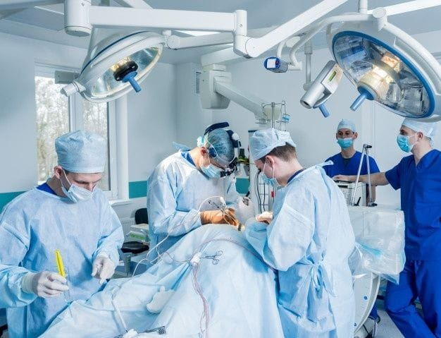
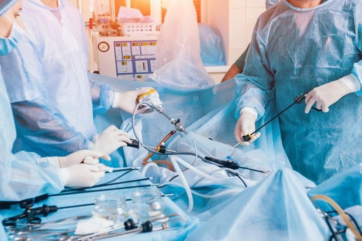

The General Surgery department focuses on diagnosing and treating a wide range of surgical conditions, particularly those related to the abdomen and digestive system. It offers advanced surgical care with an emphasis on patient safety and recovery.
Our experienced team of Genaral Surgery specialists are dedicated to providing personalized care to every patient.